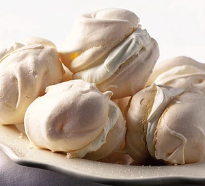

Meringue

Description
448 calories; protein 29.7g; carbohydrates 36.5g; fat 21.3g; cholesterol 81.8mg; sodium 1400.4mg.
Ingredients
- 4 large organic egg whites, at room temperature
- 115g caster sugar
- 115g icing sugar
Steps
- Heat the oven to 110C/ 100C fan/gas ¼.
- Line 2 baking sheets with non-stick liner or parchment paper (meringue can stick on greaseproof paper and foil).
- Tip 4 large egg whites into a large clean mixing bowl (not plastic). Beat them on medium speed with an electric hand whisk until the mixture resembles a fluffy cloud and stands up in stiff peaks when the blades are lifted.
- Now turn the speed up and start to add 115g caster sugar, a dessertspoonful at a time. Continue beating for 3-4 seconds between each addition. It’s important to add the sugar slowly at this stage as it helps prevent the meringue from weeping later. However, don’t over-beat. When ready, the mixture should be thick and glossy.
- Sift one third of the 115g icing sugar over the mixture, then gently fold it in with a big metal spoon or rubber spatula. Continue to sift and fold in the remaining icing sugar a third at a time. Again, don’t over-mix. The mixture should now look smooth and billowy.
- Scoop up a heaped dessertspoonful of the mixture. Using another dessertspoon, ease it on to the baking sheet to make an oval shape. Or just drop them in rough rounds, if you prefer.
- Bake for 1 ½-1 ¾ hours in a fan oven, 1 ¼ hours in a conventional or gas oven, until the meringues sound crisp when tapped underneath and are a pale coffee colour.
- Leave to cool on the trays or a cooling rack. (The meringues will now keep in an airtight tin for up to 2 weeks, or frozen for a month.) Serve two meringues sandwiched together with a generous dollop of softly whipped double cream.